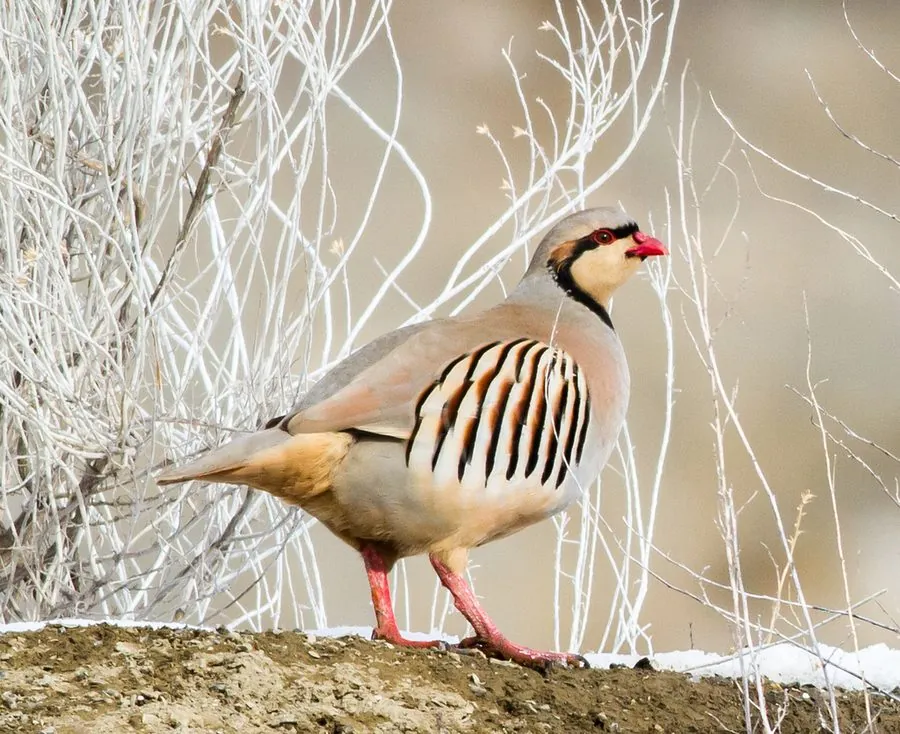

鸟类 · 动物界
石鸡 Alectoris chukar

喜欢在岩石山坡活动的雉类，脸部有黑色羽带、两胁带醒目条纹，脚和喙鲜红，常成群在干燥山地觅食。
- 分类
- 门脊索动物门纲鸟纲目鸡形目科雉科属石鸡属
- 栖息环境
- 干燥的岩石山坡、荒漠草原、灌丛和梯田边缘，常成群活动
- 地理分布
- 欧洲东南部、中亚、南亚和中国西北地区，已被引入北美等地
- 保护级别
- IUCN 无危（LC）；中国“三有”保护动物
物种志
石鸡体长 32–39 cm，体重约 400–800 g，翼展 47–52 cm。它的上体呈灰褐色，喉部白色，脸部有一道黑色羽带从额头延伸到颈侧，两胁有黑色和栗红色相间的醒目条纹，喙和脚呈鲜红色。它的体形圆润，常在地面快速奔跑。
石鸡广泛分布于欧洲东南部、中亚、南亚和中国西北地区，栖息在干燥的岩石山坡、荒漠草原、灌丛和梯田边缘。它们以植物种子、嫩叶和昆虫为食，常成群活动，遇到危险时喜欢快速奔跑或短距离飞行。石鸡适应干旱环境的能力很强，可以在缺水的山地生存。繁殖期在地面草丛或岩石下筑巢，每窝产卵 7–14 枚，孵化约 22–24 天。石鸡已被引入北美等地作为狩猎鸟，目前被列为无危物种。
形态与习性
- 食性植物种子、嫩叶和昆虫
- 体长32–39 cm
- 体重约 400–800 g
- 翼展47–52 cm
- 繁殖每窝 7–14 枚卵，孵化约 22–24 天
- 寿命野外约 5–8 年
- 习性喜欢在岩石山坡快速奔跑，成群活动
趣味知识
- 石鸡两胁有黑白栗红相间的条纹，是辨认它的重要特征。
- 它的喙和脚鲜红，喜欢在岩石山坡上快速奔跑。
- 石鸡适应干旱环境，能在缺水的山地生存。
- 石鸡被引入北美后成为受欢迎的狩猎鸟。